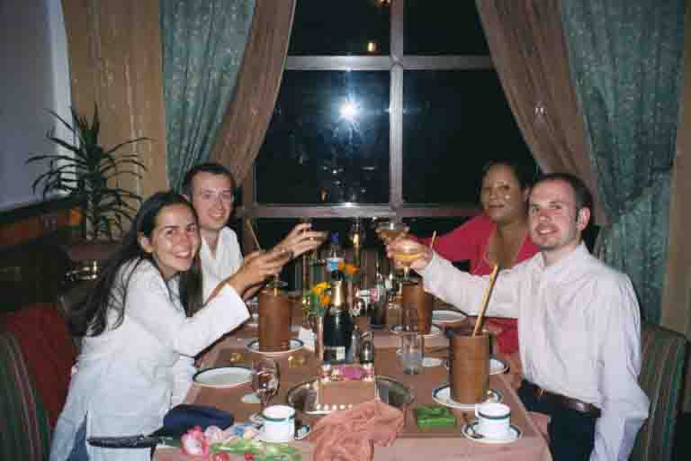
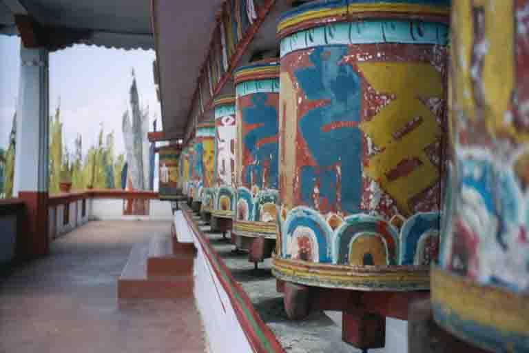
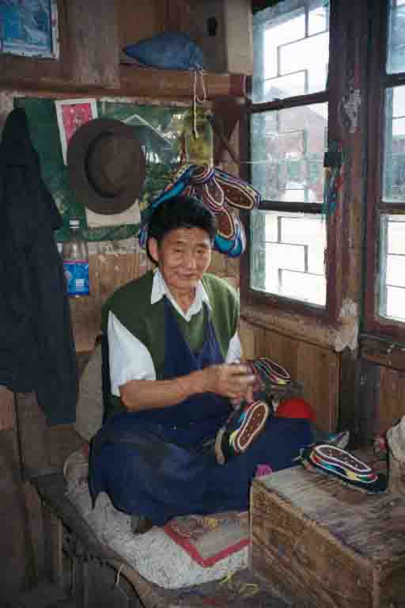
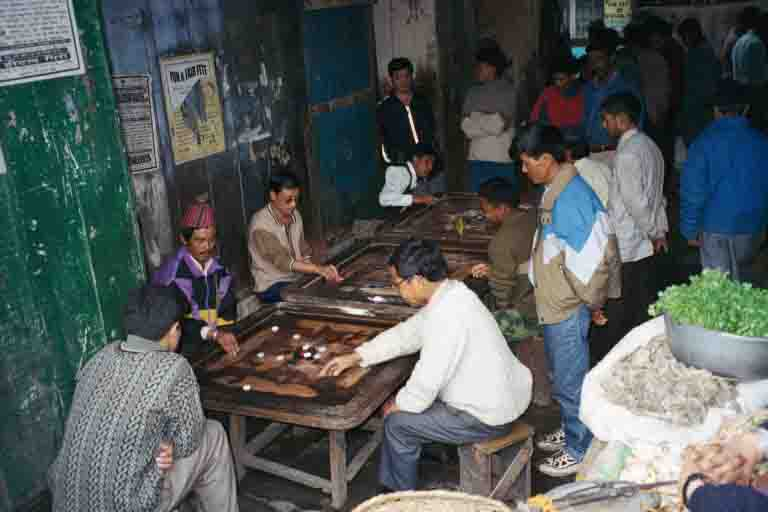

Monks and mantras
Darjeeling, India
Two hours above the sweaty plains of West Bengal we found ourselves wrapped in thick fog and shivering from the cold. We were in Darjeeling, Queen of the Hills, at an altitude of around 2000m. We had been joined by our friends, Che and James, for a three-day whistle stop tour of the hills and our intention was to retrace our steps at a far more leisurely pace after they'd left. As they were in India for such a short time they had both a driver and an itinerary which is rather different from the norm for us, but we just sat back and enjoyed three days of being carted around.
Che and James second day with us was Sue's Birthday - not the first since we've been away! It started with breakfast on the veranda of the Himalayan Hotel (http://www.kalimpong.org/himalayan/index.html) in Kalimpong, with our first unhindered view of the worlds third highest peak, Kanchenjunga, in front of us. And, it ended in Sikkim with a traditional Sikkimese feast - which included the local brew, tongba (which is made from fermented millet and drunk hot through a bamboo straw), a birthday cake, a 'Happy Birthday to Sue' (sung very loudly!), the obligatory blowing out of candles and finally a bottle of champagne brought from Brussels by our friends.
Sikkim has only been part of India since 1975 when 97 percent of the population voted to go with India. The population is made up of a range of different people, although the vast majority are Tibetans, called Bhutias, who left Tibet for India in the 15th Century. Up until 1975 it was ruled by the Chogyal, a king, originally installed by the Bhutias. Now, although it is just another Indian state you need a permit to enter which although very easy to obtain still keeps the number of visitors down.
When Che and James left we returned to Kalimpong. It isn't exactly chock full of tourist sights - it's just a smallish working market town - but that was probably our reason for staying here for a few days, plus the fact that no one took any notice of us! Once a week Kalimpong holds a 'haat' - a big local produce market - when it turns from a sleepy place into an unbelievably bustling and congested town. In fact, as we walked to the 'haat' one Saturday morning we could barely make our way down the road due to the sheer number of buses, jeeps and mopeds. It was interesting just to wander around - there were people from all the different local indigenous groups and all sorts of things on sale from fruits and fish to goats which shoppers led away on leads! There were even cute little piglets being picked up by their hind legs and inspected. As we walked past one Sue said, 'Ooh, that's a nice one' to which everyone around nodded and laughed and looked to me for further verification which I did with a thumbs up. Of course, Sue's comment came purely from the fact that the piglet was nice and pink and had a perfect swirly tail, nevertheless, it was bought on our words of commendation!
One afternoon as we were wandering past the townhall we noticed that there was a magician on that evening - Kumar, Gold Medallist - so we rushed to buy the last tickets. The whole town it seemed had turned out to watch S. Kumar that evening. The show was truly appalling, it was so very bad in fact that it was hysterically funny. From the disappearing pingpong ball that 'disappeared' behind an 'invisible' curtain to the 'cut the girl in half trick' which took about 10 minutes to set up (by which time the little boy behind me was fast asleep) and when Kumar demonstrated the sharpness of the blade it took a good couple of minutes to slice through a candle! He was heckled, jeered and kept interrupting his set to sort out the tape recorder which kept chewing his tapes. S. Kumar - the worlds worst magician, but so worth it for the amusement value!
There was a limitless number of monasteries to visit and we managed to make our way around most of them both in Kalimpong and Darjeeling. Everywhere you go there are monks wandering around - to Sue's glee we even picked up an extremely old monk hitch-hiking in the cold and rain - he sat and hummed all the way to the monastery! One monstery in Kalimpong we liked so much that we returned on a couple of occasions. The monastery itself, Tarpa Choling, was under renovation and so there weren't any fantastic mandalas painted on the ceilings or rows of prayer wheels around the outside of the building for devotees to turn as they hum their mantras, like many of the others we'd seen. But it did have prayer flags, rows and rows of them, carrying the prayers onto the breeze, all brightly coloured and a very beautiful sight indeed. And there were monks, loads of them, ranging from the old monk who greeted us at the gates with a big toothless smile in between his 'oms' and 'hums', to the group of teenagers piling up bricks for the renovation work with their maroon robes in all stages of dishevellment and the group who we sat down to watch with Viv and Heleyne that afternoon - the youngest ones. They were playing marbles, tustling a little and occasionally giving one another a good hard slap on their newly shaved heads! However pious these little fellows may appear they are still just naughty little boys after all!
Our final stop in the hills was Darjeeling where we stayed with Viv and Heleyne for their last week in India. We stayed at the Dekeling Resort (http://www.dekeling.com) owned by a lovely Tibetan couple and run by another equally lovely couple called Lama and Radha. They became something of surrogate parents for our stay - bringing bed tea in the morning, lighting our log fire just before our return in the evening, cooking good food and teaching us all sorts of things about Buddhism. The owner, Mr and Mrs Norbu (Norbu was in fact the husband's first name, and we didn't know the lady's - all the staff called them this anyway!) were also very hospitable, always taking the time to sit and talk about Tibetan issues with us. Another special monastery was Druk Sangak Choeling in Darjeeling - this time it was huge and covered in beautiful immaculate paintings, but once again it was the community of monks - 200 in all - who made it such a lovely place. We were up there for yonks, just watching - sitting in the corner of the courtyard on the floor was a nun in a woolly red hat sewing; there were two oldish monks sitting in the steps with their shoes off chatting and laughing and below us were a few young monks having their heads shaved by a teenage monk who was trying to toughen them up by dry shaving their heads and managing to take chunks out of them. A very little monk ran past us rubbing his newly shaven head and stood in front of the two monks on the steps to show how brave he'd been - there were smiles all round and a pat on the head for this brave little soul! Then there were monks leaning over the edge of the roof deep in serious discussion and the young monks fighting and sliding down bannisters, their robes flowing behind them. Amid this confusion was a prayer room containing five huge golden prayer wheels - at one sat an old Tibetan lady in traditional dress, her prayer beads in hand, humming her 'om mani padme hums' as she turned the wheel and her prayers were carried away. In between this contemplation she found time to turn round occasionally and beam at us! On our way out we were invited to the monastery kitchen for Tibetan salt and butter tea by Sonam, a monk who had been studying here for the last ten years. Of course, we accepted his hospitality, but after the third cup of Tibetan tea we'd really had our fill of salt and butter!!Viv and Heleyne left a day before us and that was sad. We have been travelling together on and off for nearly three months now and it felt like the end of another stage of our trip. The next day we left and were presented with offering scarves by Mr and Mrs Norbu which caused Sue even further tears. Although, as I said at the time, no need to cry because sure enough we'll be back here before too long.
Che and James second day with us was Sue's Birthday - not the first since we've been away! It started with breakfast on the veranda of the Himalayan Hotel (http://www.kalimpong.org/himalayan/index.html) in Kalimpong, with our first unhindered view of the worlds third highest peak, Kanchenjunga, in front of us. And, it ended in Sikkim with a traditional Sikkimese feast - which included the local brew, tongba (which is made from fermented millet and drunk hot through a bamboo straw), a birthday cake, a 'Happy Birthday to Sue' (sung very loudly!), the obligatory blowing out of candles and finally a bottle of champagne brought from Brussels by our friends.
Sikkim has only been part of India since 1975 when 97 percent of the population voted to go with India. The population is made up of a range of different people, although the vast majority are Tibetans, called Bhutias, who left Tibet for India in the 15th Century. Up until 1975 it was ruled by the Chogyal, a king, originally installed by the Bhutias. Now, although it is just another Indian state you need a permit to enter which although very easy to obtain still keeps the number of visitors down.
When Che and James left we returned to Kalimpong. It isn't exactly chock full of tourist sights - it's just a smallish working market town - but that was probably our reason for staying here for a few days, plus the fact that no one took any notice of us! Once a week Kalimpong holds a 'haat' - a big local produce market - when it turns from a sleepy place into an unbelievably bustling and congested town. In fact, as we walked to the 'haat' one Saturday morning we could barely make our way down the road due to the sheer number of buses, jeeps and mopeds. It was interesting just to wander around - there were people from all the different local indigenous groups and all sorts of things on sale from fruits and fish to goats which shoppers led away on leads! There were even cute little piglets being picked up by their hind legs and inspected. As we walked past one Sue said, 'Ooh, that's a nice one' to which everyone around nodded and laughed and looked to me for further verification which I did with a thumbs up. Of course, Sue's comment came purely from the fact that the piglet was nice and pink and had a perfect swirly tail, nevertheless, it was bought on our words of commendation!
One afternoon as we were wandering past the townhall we noticed that there was a magician on that evening - Kumar, Gold Medallist - so we rushed to buy the last tickets. The whole town it seemed had turned out to watch S. Kumar that evening. The show was truly appalling, it was so very bad in fact that it was hysterically funny. From the disappearing pingpong ball that 'disappeared' behind an 'invisible' curtain to the 'cut the girl in half trick' which took about 10 minutes to set up (by which time the little boy behind me was fast asleep) and when Kumar demonstrated the sharpness of the blade it took a good couple of minutes to slice through a candle! He was heckled, jeered and kept interrupting his set to sort out the tape recorder which kept chewing his tapes. S. Kumar - the worlds worst magician, but so worth it for the amusement value!
There was a limitless number of monasteries to visit and we managed to make our way around most of them both in Kalimpong and Darjeeling. Everywhere you go there are monks wandering around - to Sue's glee we even picked up an extremely old monk hitch-hiking in the cold and rain - he sat and hummed all the way to the monastery! One monstery in Kalimpong we liked so much that we returned on a couple of occasions. The monastery itself, Tarpa Choling, was under renovation and so there weren't any fantastic mandalas painted on the ceilings or rows of prayer wheels around the outside of the building for devotees to turn as they hum their mantras, like many of the others we'd seen. But it did have prayer flags, rows and rows of them, carrying the prayers onto the breeze, all brightly coloured and a very beautiful sight indeed. And there were monks, loads of them, ranging from the old monk who greeted us at the gates with a big toothless smile in between his 'oms' and 'hums', to the group of teenagers piling up bricks for the renovation work with their maroon robes in all stages of dishevellment and the group who we sat down to watch with Viv and Heleyne that afternoon - the youngest ones. They were playing marbles, tustling a little and occasionally giving one another a good hard slap on their newly shaved heads! However pious these little fellows may appear they are still just naughty little boys after all!
Our final stop in the hills was Darjeeling where we stayed with Viv and Heleyne for their last week in India. We stayed at the Dekeling Resort (http://www.dekeling.com) owned by a lovely Tibetan couple and run by another equally lovely couple called Lama and Radha. They became something of surrogate parents for our stay - bringing bed tea in the morning, lighting our log fire just before our return in the evening, cooking good food and teaching us all sorts of things about Buddhism. The owner, Mr and Mrs Norbu (Norbu was in fact the husband's first name, and we didn't know the lady's - all the staff called them this anyway!) were also very hospitable, always taking the time to sit and talk about Tibetan issues with us. Another special monastery was Druk Sangak Choeling in Darjeeling - this time it was huge and covered in beautiful immaculate paintings, but once again it was the community of monks - 200 in all - who made it such a lovely place. We were up there for yonks, just watching - sitting in the corner of the courtyard on the floor was a nun in a woolly red hat sewing; there were two oldish monks sitting in the steps with their shoes off chatting and laughing and below us were a few young monks having their heads shaved by a teenage monk who was trying to toughen them up by dry shaving their heads and managing to take chunks out of them. A very little monk ran past us rubbing his newly shaven head and stood in front of the two monks on the steps to show how brave he'd been - there were smiles all round and a pat on the head for this brave little soul! Then there were monks leaning over the edge of the roof deep in serious discussion and the young monks fighting and sliding down bannisters, their robes flowing behind them. Amid this confusion was a prayer room containing five huge golden prayer wheels - at one sat an old Tibetan lady in traditional dress, her prayer beads in hand, humming her 'om mani padme hums' as she turned the wheel and her prayers were carried away. In between this contemplation she found time to turn round occasionally and beam at us! On our way out we were invited to the monastery kitchen for Tibetan salt and butter tea by Sonam, a monk who had been studying here for the last ten years. Of course, we accepted his hospitality, but after the third cup of Tibetan tea we'd really had our fill of salt and butter!!Viv and Heleyne left a day before us and that was sad. We have been travelling together on and off for nearly three months now and it felt like the end of another stage of our trip. The next day we left and were presented with offering scarves by Mr and Mrs Norbu which caused Sue even further tears. Although, as I said at the time, no need to cry because sure enough we'll be back here before too long.

Sue's birthday meal with Nathan, Che and James in Gangtok, Sikkim

Prayer wheels at Durpin Point monastery, Kalimpong, This monastery is also known as Hogmin Ngayab Zangdok Palri Phodang Tsenpo

Carpenter at Tibetan Self-help Centre in Darjeeling

2 Tibetan men waiting for their tea break outside the kitchens at the Tibetan Self-help Centre in Darjeeling

Traditional Tibetan shoemaker at Tibetan Self-help Centre, Darjeeling

'Knitter'at Tibetan Self-Help Centre, Darjeeling

Rada and Lama - our surrogate parents at the Dekyling Resort (notice a young man in the window above?!)

Toy train in Darjeeling

The curumba games hall, downtown Darjeeling